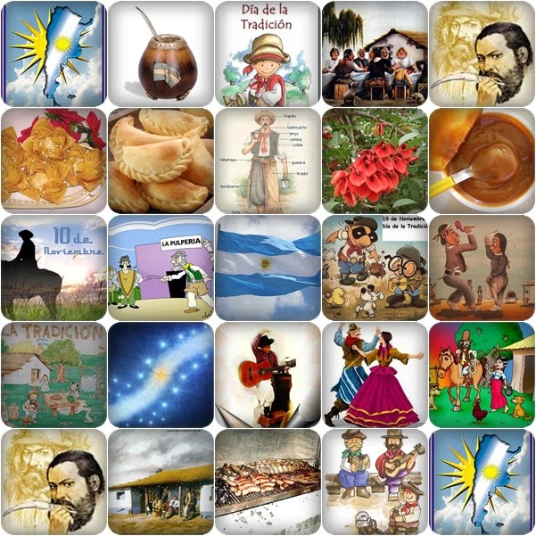

|  | El Día de la Tradición se celebra en Argentina el 10 de noviembre, fecha que fue elegida en conmemoración del nacimiento del poeta argentino José Hernández (1834 - 1886), que escribió, entre otros, el poema narrativo El gaucho Martín Fierro, La vuelta de Martín Fierro, relatos en forma de verso de la experiencia de un gaucho, su estilo de vida, sus costumbres, su lengua y códigos de honor. |
| San Juan | |||
Las tradiciones de San Juan son muchas y vienen de antaño ya que se trata de una provincia Argentina que prioriza su identidad por sobre todas las cosas. Una de las tradiciones más importantes que tiene la provincia Cuyana transcurre en el departamento de Jáchal, un pueblo que se caracteriza por preservar todas sus costumbres las cuales son expresadas anualmente en la fiesta de la tradición. Cada año, entre el 4 y el 20 de noviembre cuando se lleva a cabo esta fiesta, en donde se reaviva el sentimiento de arraigo que tiene que ver con las tradicionales costumbres de la región, el legado colonial y por supuesto el legado criollo propio de la zona. |
|||